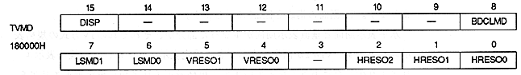

TV screen display bit : Display bit (DISP), bit 15
DISP | Processing |
0 | No picture on TV screen |
1 | Display a picture on the TV screen |
∙ When this bit is 0, it remains blank during the display period, so VRAM access from the CPU or DMA controller is always possible.
∙ The color displayed when this bit is 0 is specified by the BDCLMD bit.
変 更 Be sure to change this bit from 0 to 1 during the V blank period.
BDCLMD | Processing |
0 | display black |
1 | Display back screen |
When the DISP bit is 0, specify the color for all standard display areas. However, after turning on the power or resetting, if this bit is set to 1 without setting the DISP bit to 1, the back screen will not be displayed correctly. When the back screen is set so that it can be specified for each line, the color displayed in the border area is the same color as the bottom line of the setting display area.